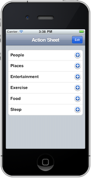
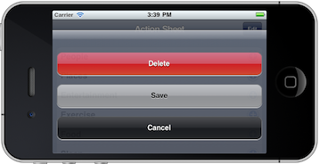

Action sheets are used to present the user with a set of alternatives for how to proceed with a given task. You can also use action sheets to prompt the user to confirm a potentially dangerous action. You create an aciton sheet using UIActionSheet. You pass an object literal containing the options for the popup. When you create an action sheet, ChocolateChip-UI automatically creates a screen cover which sits behind the action sheet and prevents user interaction with the interface.
Parameters:
Example:
Here's the initialization and creation of an action sheet. The callbacks would be defined elsewhere.
var opts = {
id : "actionsheet_01",
title : "This is an Annoucement!",
color : "blue",
buttons : [
{ title : "Delete", UIButtonImplements : "delete", callback : "respondToDeleteButton" },
{ title : "Save", UIButtonImplements : "save", callback : "respondToSaveButton"
}
]
};
$.body.UIActionSheet(opts);
After creating the above popup, we can show it by binding an appropriate event to a button:
$("#displayActionSheet").bind("click", function() {
$.UIShowActionSheet("#actionsheet_01");
});
Hiding the action sheet is handled automatically when the users presses Cancel or any other button on the action sheet. ChocoalteChip-UI registers an action sheet's id on the app with the data-ui-action-sheet-id attribute. ChocolateChip-UI also has a number of methods related to actions sheets to handle repositioning and adjustments after an orientation change. It also provides automatic scrolling for when there is not enough room for all the uibuttons to fit on the screen. Having said that, it is not advised to put more than three action uibuttons in an action sheet. Remember, an actions sheet is about present several of possible actions related to something the user just chose to do. If you need more choices that can fit comfortably in an action sheet, you need to rethink you UI. Maybe a tableview with switch controls would serve your needs better.
And here is an action sheet. The first image shows the screen before pressing the Edit button, which will show the action sheet.

